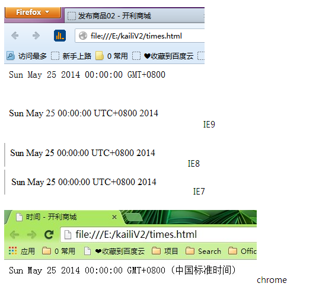

原想分享一下版本控制工具-分布式版本控制git，以尽量减少项目开发过程中因为需求更新或代码更新带来的无效开发、重复开发。但是实践和整理以后发现自己对它的认识还有很多不足，所以本周换个话题：温故而知新 - javascript DATE()。
Javascript原生对象有Undefined、Null、Object、Boolean、String、Nubmer、Function、Arry、Date、RegExp、Error、Math、JSON
其中Object、Boolean、String、Number、Function、Array、Date、RegExp、Error由可以称为构造器。
方法的行为因实现而异，通常是因地区而异。
如果传入此方法的字符串不能表示日期，那么它会返回NAN
var someDate = new Date("Mat 25.2004"); 等价于 var someDate = new Date(Date.parse("Mat 25.2004"));
方法的行为因实现而异，通常是因地区而异。
参数分别是年份、基于0的月份（一月是0）、月中的那一天（0~31）、分钟、秒 以及毫秒数
var someDate = new Date("Mat 25.2004"); 等价于 var someDate = new Date(Date.parse("Mat 25.2004"));
年和月是必需的 ；天数默认为1， 其他参数默认为0
各个国家指定的日期格式：
美国：MM/DD/YY
欧洲：DD/MM/YY
中国：YY/MM/DD
月/日/年：6/13/2013
英文月 日,年：January 12，2013
英文星期 英文月 日 年 时：分：秒 时区：Tue May 25 20014 00：00：00 GMT-0700
ISO 8601扩展格式 YYYY-MM-DDTTHH:mm:ss.sssZ [只有兼容ECMASCRIPT5的实现支持这种格式]
不同浏览器返回，略有差别

var d=new Date()
var weekday=new Array(7)
weekday[0]="星期日"
weekday[1]="星期一"
weekday[2]="星期二"
weekday[3]="星期三"
weekday[4]="星期四"
weekday[5]="星期五"
weekday[6]="星期六"
document.write("今天是" + weekday[d.getDay()])